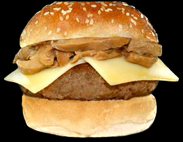

Setas
Queso suizo, setas a la plancha sobre salsa de soja y mantequilla

Queso suizo, setas a la plancha sobre salsa de soja y mantequilla
Queso cheddar y el pan.
Queso cheddar, lechuga, tomate y bacon.
Pollo aguacate y salsa barbacoa.
Lechuga, tomate, cebolla roja, queso cheddar y huevo frito.
Aceite de trufa, queso cheddar, bacon, lechuga, aguacate y cebolla caramelizada.
Una cerveza amarga y fuerte con un alto contenido de lúpulo y alcohol. Las IPA se caracterizan por su sabor a lúpulo y sus notas cítricas y frutales.
Una cerveza oscura y rica, con un sabor a malta tostada y a veces a café o chocolate. Las cervezas Stout suelen tener un contenido de alcohol más alto que otras cervezas.
Una cerveza belga con un sabor a caramelo, especias y frutas oscuras. Las Dubbel suelen tener un contenido de alcohol moderado.
Una cerveza de trigo alemana con un sabor a plátano y clavo de olor. Las Hefeweizen suelen ser cervezas ligeras y refrescantes.
Una cerveza belga de verano con un sabor a especias y un toque de acidez. Las Saison suelen ser cervezas ligeras y efervescentes.
Una cerveza de color cobrizo con sabor a malta tostada y notas de caramelo y frutas. Las Amber Ale suelen tener un contenido de alcohol moderado y un amargor equilibrado.